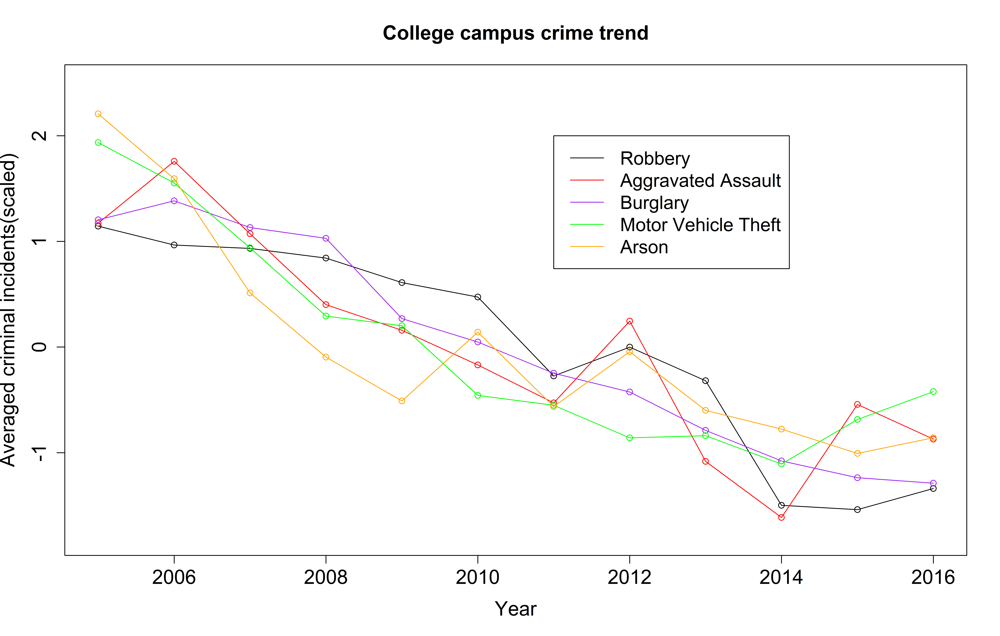
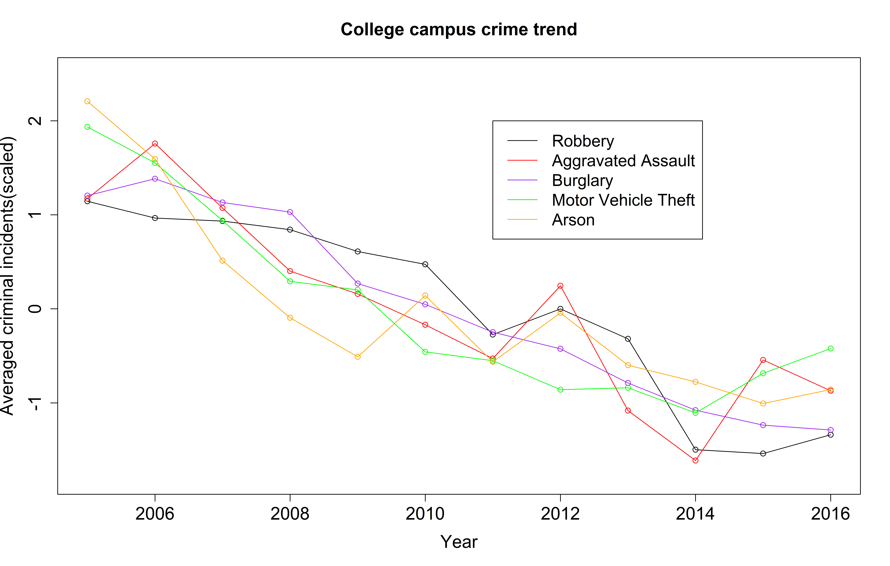

Preliminary results
Project title: College campus crime distribution and trend in US.
This project will involve in creating a compiled database to evaluate current campus crime distribution and future trend in US. The original data is provided by U.S. Department of Education and it was not comprehensibly analyzed.
 
